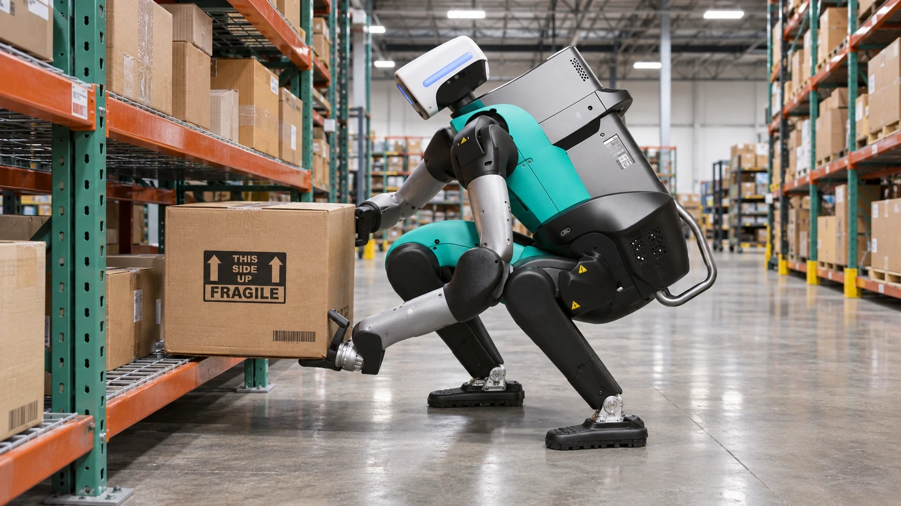

Agility Robotics Joins Nasdaq With Robot Orders Still Facing Delivery Tests
The Digit maker has disclosed more than $300 million in conditional orders, against roughly $174,000 of first-half sales. The gap puts execution and cash use in focus.

Agility Robotics began its public-market debut on November 5 under the Nasdaq symbol AGLT, following the completion of its combination with Churchill Capital Corp XI. The maker of the Digit humanoid robot is bringing a business already operating in commercial settings to investors, alongside a next-generation product whose broader rollout remains ahead of it.
The listing provides a financial test of a technology more often assessed through demonstrations. A robot moving a box establishes a capability. A repeatable business also needs dependable production, economical service and customers willing to expand deployments. Public ownership will make the relationship between those requirements and Agility’s financial results more visible.
The transaction and related financings represent approximately $465 million in gross capital before expenses, according to Agility’s disclosures. That total includes $100 million of equity funding received before closing. It should not be described as $465 million of new cash arriving on the first trading day, nor as the amount remaining after transaction costs.
Orders and revenue sit at different stages
Agility says it has more than $300 million of committed multiyear orders for Digit 5. Its announcement also states that those orders depend on contractual milestones, product features and specifications. The number signals customer commitments, but its conditions are central to understanding what has been secured. It does not establish that the same amount has already become revenue or cash.
The contrast with the existing business is stark. Agility’s SEC prospectus reports total net sales of $174,362 for the six months ended June 30, 2026, compared with $624,866 a year earlier. About $120,699 of the latest period’s sales came from related parties. Those historical results measure recognized business, while the conditional order total describes future commitments.
The same filing shows a first-half net loss of approximately $361.9 million and operating cash use of $86.2 million. The accounting loss is not equivalent to cash spending: increased stock-based compensation was a major contributor to the expense increase. Both measures matter, but using them interchangeably would misstate the company’s funding needs.
The timing reinforces that distinction. Agility targets early customer access to Digit 5 in the first half of 2027 and general availability by the end of that year. Both are forward-looking milestones. The current public listing therefore precedes the planned broad availability of the product associated with the disclosed order total.
For a manufacturer, delivering against such commitments can require spending before payment is collected. Components, assembly work, installation and service preparation all belong in the economics of a deployment. An order can be commercially valuable while still increasing near-term funding needs. TTN’s free cash flow guide explains why revenue growth and the cash available after investment can move differently.
Commercial experience gives the story a starting point
Agility’s existing Digit platform has deployments involving GXO, Schaeffler and Toyota Motor Manufacturing Canada, according to the company’s closing announcement. It also reports more than 65,000 hours of real-world operation. Those are company-reported measures of experience, not an independently standardized comparison of performance against competing robots or conventional automation.
Operating history nevertheless changes the questions that can be asked. A demonstration is usually designed around a task the machine can perform. A deployed system must also handle interruptions, recovery and integration with the rest of a facility. The cost of human intervention matters alongside the number of successful movements because assistance can absorb some of the labor saving the equipment was intended to deliver.
The central customer calculation is the cost of useful work over time. That includes the equipment or service charge, integration, maintenance and the effect of downtime. A humanoid form can be attractive in an environment built around people, but it still competes with other ways of completing the job. TTN’s analysis of robotics returns in factories examines why task-level economics matter more than a general claim that robots improve productivity.
Factory capacity needs customers and working capital
Agility’s RoboFab facility in Salem, Oregon, is designed for annual production capacity of up to 10,000 robots. Designed capacity describes the manufacturing system’s intended scale. It is not a statement that the plant currently produces that many machines, that customers have accepted them or that the company earns an adequate margin on each one.
The difference can be substantial during a production ramp. Equipment and staffing commitments may be in place before volumes are high enough to spread fixed costs efficiently. Faster production can also tie up cash in inventory if delivery or customer acceptance takes longer than expected. These are manufacturing considerations, not evidence that Agility has already encountered a particular failure.
Its route to the market adds a separate financial layer. Agility completed a business combination with a special purpose acquisition company rather than a conventional initial public offering. The mechanics of going public affect the ownership and financing structure, but a listing itself supplies no assurance about future product performance. Common stock and warrants also represent different securities; the latter should not be treated as interchangeable with ordinary shares.
The practical milestones are now more specific than a broad forecast for humanoid adoption. Conditional orders must become accepted deliveries, the next generation must reach customers on a workable schedule and commercial sites must generate a case for expansion. Agility has brought operating experience and disclosed commitments to public markets. The task ahead is to demonstrate how those assets translate into a durable manufacturing and service business.